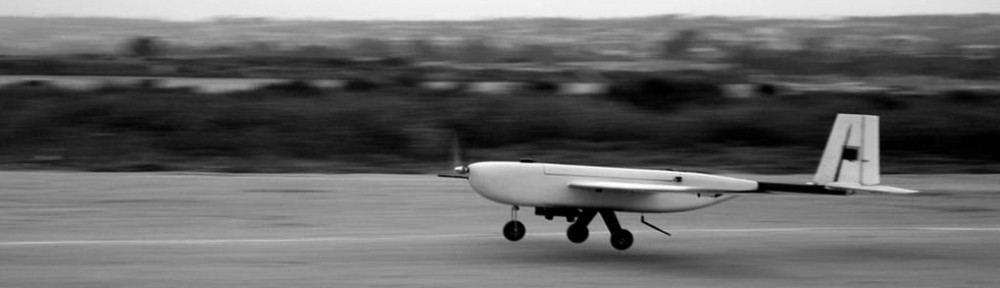

UCSD AUVSI
The University of California, San Diego AUVSI Team is a competitive team of engineers and RC pilots that design, build, and fly an autonomous airplane capable of self guided flight, takeoff, and landing as well as shooting photos and recognizing ground targets from altitudes of hundreds of feet. I am a member of the Embedded Systems team focusing on the autopiloting system and imagery controller. The autopilot module is the 3DR Pixhawk (ArduPilot Mega 2.6) for fixed wing aircraft and the autopilot software we are using is called MissionPlanner. Originally using a Teensy 3.1, we've elected to instead use an Arduino as an Imagery Controller that communicates with our OBC (Onboard Computer) as well as our Gimbal Controller, camera, and radio. My responsibities include the assembly and callibration of autopiloting sensors like the airspeed sensor, compass, GPS, buzzer, etc. as well as documenting and writing code for the imagery controller in C++. I also take part in writing the software associated with the onboard sensors. The project website is here
Raspberry Pi
Using the Raspberry Pi microcomputer, I have and continue to work on small electronics and robotics projects. For example, using the GoPiGo board (based on Arduino) and robot chassis, I've assembled the hardware and software components of a remotely operated rover with live camera feedback. The rover is both highly customizable and expandable. Using the GPIO pins on the RPi and the GoPiGo board (based on Arduino), you can control the motors for the wheels in either direction, control the servo packge for the camera, and more. The camera is a Raspberry Pi "Pi Camera." Possible additions to the project include autonomy and computer vision elements.
Spudnik
Spudnik is a puzzle game featuring a potato in space. I introduced the puzzle mechanic and setting to a 2 of my friends and fellow engineers who together programmed what we have so far (Vladimir Klimkiv and Saveen Chadalawada). Aside from the mechanic and setting, my other contributions have been in the department of music composition and sound effect assets. The game is still far from complete and I hope to contribute both to level design and coding from here on out. Spudnik is being developed in the GameMaker Studio IDE and was started at a UCSD Game Jam (hackathon).
SpaceLearn
In 4th grade I had my first real astronomy unit. Of course it was basic and only really emphasized our solar system, but it nonetheless sparked my interest in space exploration. Hoping to provide that same spark to young elementary schoolers, I set out to create a visually stimulating and interactive web application. Still in the works, SpaceLearn will include a fully animated diagram of our solar system. Furthermore, a small display on the side of the screen will provide quantitative data about each planet as well as interesting facts and current news regarding the planet of interest. Space is awesome!

Evil Hangman
Evil Hangman is a sadistic twist on the classic word game Hangman. In this command line style game, the computer actively utilizes the player's letter guesses to determine what word to choose. It does this in such a way that dramatically increases the likelihood of incorrectly guessing the word in question. Using the Dictionary datatype and a recursive algorithm that repeatedly splits the dictionary into parts that can be selected upon based on the user's input, Evil Hangman's AI opponent is nearly impossible to defeat. Here is a sample run: